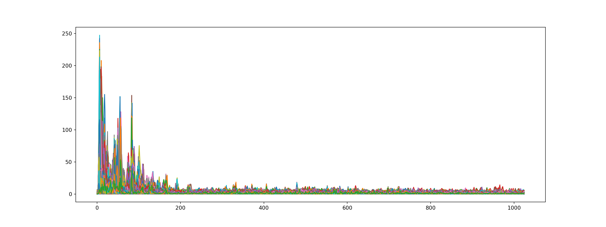
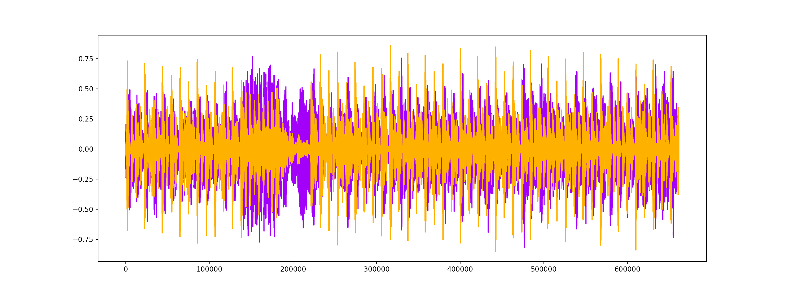
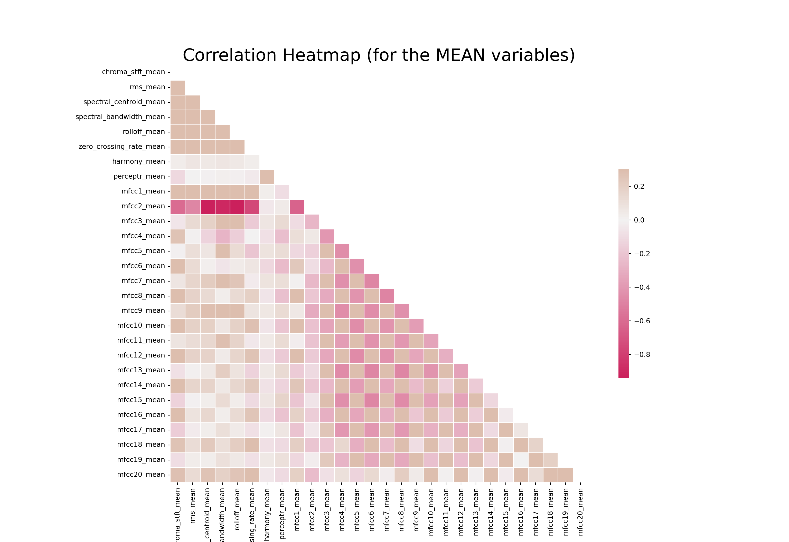

Machine Learning with Audio data
When we think of data, people may think of numbers and texts in tables. Some may even think of using images as data, but just so you know, we can also convert and extract features from audio data (i.e., music) to understand and make use of it as well! Here, we will visualize music sound wave from .wav files to understand about what differentiates one tone from another (we can actually see soundwaves!).
I primarily relied on Olteanu et al.(2019)s work, Music genre classification article, and Analytics Vidhya guide to the same topic to guide this reproduction and experimentation with the data.
To introduce the data set a bit. I will be using the GTZAN dataset, which is a public data set for evaluation in machine listening research for music genre recognition (MGR). The files were collected in 2000-2001 from a variety of sources including personal CDs, radio, microphone recordings to represent a variety of recording conditions.
We will start from importing audio data into our Python environment for data visualization; then, we will explore its feature such as sound wave, spectogram, mel-spectogram, harmonics and perceptrual, tempo, spectral centroid, and chroma frequencies. We will then conduct an exploratory data analysis with correlation heatmap with the extracted features, generating a box plot for genres distribution, and perform a principal component analysis to divide genres into groups.
Lastly, we will perform machine learning classification to train the algorithm to recognize and predict new audio files into genres (e.g., rock, pop, jazz), as well as develop a music recommendation system using the
cosine similaritystatistics. This function is a part of music delivery platforms such as Spotify, Youtube music, or Apple Music.We will begin by importing necessary libraries for graphing (
seabornandmatplotlib), data manipulation (pandas), machine learning (sklearn), and audio work (librosa).
Show code
# Usual Libraries
import pandas as pd
import numpy as np
import seaborn as sns
import matplotlib.pyplot as plt
import sklearn
import librosa
import librosa.displayExplore Audio Data
- We will use
librosa, which is the main library for audio work in Python. Let us first Explore our Audio Data to see how it looks (well work withpop.00002.wavfile). We will check for sound - the sequence of vibrations in varying pressure strengths (y) and sample rate (sr) the number of samples of audio carried per second, measured in Hz or kHz.
Show code
# Importing 1 file
y, sr = librosa.load('D:/Program/Private_project/DistillSite/_posts/2021-12-11-applying-machine-learning-to-audio-data/genres_original/pop/pop.00002.wav')
print('y:', y, '\n')y: [-0.09274292 -0.11630249 -0.11886597 ... 0.14419556 0.16311646
0.09634399] Show code
print('y shape:', np.shape(y), '\n')y shape: (661504,) Show code
print('Sample Rate (KHz):', sr, '\n')
# Verify length of the audioSample Rate (KHz): 22050 Show code
print('Check Length of the audio in second:', 661794/22050)Check Length of the audio in second: 30.013333333333332- We will then clean the data by trimming all leading and trailing silence from the audio signal.
Show code
# Trim leading and trailing silence from an audio signal (silence before and after the actual audio)
audio_file, _ = librosa.effects.trim(y)
# the result is an numpy ndarray
print('Audio File:', audio_file, '\n')Audio File: [-0.09274292 -0.11630249 -0.11886597 ... 0.14419556 0.16311646
0.09634399] Show code
print('Audio File shape:', np.shape(audio_file))Audio File shape: (661504,)2D Representation: Sound Waves
- We can view a 2D representation of a sound with sound waves
Show code
plt.figure(figsize = (16, 6))<Figure size 1600x600 with 0 Axes>Show code
librosa.display.waveplot(y = audio_file, sr = sr, color = "#A300F9");
plt.title("Sound Waves in Pop 02", fontsize = 23);
plt.show()Fourier Transform
- We will then perform a fourier transform to convert the y-axis (frequency) to log scale, and the color axis (amplitude) to Decibels.
Show code
# Default FFT window size
n_fft = 2048 # FFT window size
hop_length = 512 # number audio of frames between STFT columns (looks like a good default)
# Short-time Fourier transform (STFT)
D = np.abs(librosa.stft(audio_file, n_fft = n_fft, hop_length = hop_length))
print('Shape of D object:', np.shape(D))Shape of D object: (1025, 1293)Show code
plt.figure(figsize = (16, 6))<Figure size 1600x600 with 0 Axes>Show code
plt.plot(D);
plt.show()
The Spectrogram
- Another characteristics that can represent a sound is its spectogram - a visual representation of signal frequencies across time (aka sonographs, voiceprints, or voicegrams).
Show code
# Convert an amplitude spectrogram to Decibels-scaled spectrogram.
DB = librosa.amplitude_to_db(D, ref = np.max)
# Creating the Spectogram
plt.figure(figsize = (16, 6))<Figure size 1600x600 with 0 Axes>Show code
librosa.display.specshow(DB, sr = sr, hop_length = hop_length, x_axis = 'time', y_axis = 'log', cmap = 'cool')<matplotlib.collections.QuadMesh object at 0x000000006FAB1310>Show code
plt.colorbar();
plt.show()
Mel Spectrogram
- The Mel Spectogram is a non-linear version of spectogram with a Mel scale on the y-axis. Mel scale converts the normal specrogram to frequencies that are perceptible by human ears, so basically, the difference between spectogram and mel spectogram is in its mathematical structure and its ability to be perceived by human. Each music genre has different spectogram (and mel spectogram) structure.
Show code
y, sr = librosa.load('D:/Program/Private_project/DistillSite/_posts/2021-12-11-applying-machine-learning-to-audio-data/genres_original/metal/metal.00036.wav')
y, _ = librosa.effects.trim(y)
S = librosa.feature.melspectrogram(y, sr=sr)
S_DB = librosa.amplitude_to_db(S, ref=np.max)
plt.figure(figsize = (16, 6))<Figure size 1600x600 with 0 Axes>Show code
librosa.display.specshow(S_DB, sr=sr, hop_length=hop_length, x_axis = 'time', y_axis = 'log',
cmap = 'cool');
plt.colorbar();
plt.title("Metal Mel Spectrogram", fontsize = 23);
plt.show()
Show code
y, sr = librosa.load('D:/Program/Private_project/DistillSite/_posts/2021-12-11-applying-machine-learning-to-audio-data/genres_original/classical/classical.00036.wav')
y, _ = librosa.effects.trim(y)
S = librosa.feature.melspectrogram(y, sr=sr)
S_DB = librosa.amplitude_to_db(S, ref=np.max)
plt.figure(figsize = (16, 6))<Figure size 1600x600 with 0 Axes>Show code
librosa.display.specshow(S_DB, sr=sr, hop_length=hop_length, x_axis = 'time', y_axis = 'log',
cmap = 'cool');
plt.colorbar();
plt.title("Classical Mel Spectrogram", fontsize = 23);
plt.show()Audio Features
- Now that we have explored an audio file with several visualizations of Spectogram, fourier transform, and sound waves, let us try extracting audio features that we may use with data manipulation and machine learning.
Zero Crossing Rate
- the rate at which the sound signal changes from positive to negative and vice versa. This feature is usually used for speech recognition and music information retrieval. Music genre with high percussive sound like rock or metal usually have high Zero Crossing Rate than other genres.
Show code
# Total zero_crossings in our 1 song
zero_crossings = librosa.zero_crossings(audio_file, pad=False)
print(sum(zero_crossings))78769Harmonics and Perceptual
Harmonics (the orange wave) are audio characteristics that human ears cant distinguish (represents the sound color)
Perceptual (the purple wave) are sound waves that represent rhythm and emotion of the music.
Show code
y_harm, y_perc = librosa.effects.hpss(audio_file)
plt.figure(figsize = (16, 6))<Figure size 1600x600 with 0 Axes>Show code
plt.plot(y_harm, color = '#A300F9');
plt.plot(y_perc, color = '#FFB100');
plt.show()
Tempo BMP (beats per minute)
- Tempo is the number of beat per one minute.
Show code
tempo, _ = librosa.beat.beat_track(y, sr = sr)
tempo107.666015625Spectral Centroid
- This variable represents brightness of a sound by calculating the center of sound spectrum (where the sound signal is at its peak). We can also plot it into a wave form.
Show code
# Calculate the Spectral Centroids
spectral_centroids = librosa.feature.spectral_centroid(audio_file, sr=sr)[0]
# Shape is a vector
print('Centroids:', spectral_centroids, '\n')Centroids: [3042.39242043 3057.96296504 3043.45666379 ... 3476.4010229 3908.31319501
3834.930348 ] Show code
print('Shape of Spectral Centroids:', spectral_centroids.shape, '\n')
# Computing the time variable for visualizationShape of Spectral Centroids: (1293,) Show code
frames = range(len(spectral_centroids))
# Converts frame counts to time (seconds)
t = librosa.frames_to_time(frames)
print('frames:', frames, '\n')frames: range(0, 1293) Show code
print('t:', t)
# Function that normalizes the Sound Datat: [0.00000000e+00 2.32199546e-02 4.64399093e-02 ... 2.99537415e+01
2.99769615e+01 3.00001814e+01]Show code
def normalize(x, axis=0):
return sklearn.preprocessing.minmax_scale(x, axis=axis)Show code
#Plotting the Spectral Centroid along the waveform
plt.figure(figsize = (16, 6))<Figure size 1600x600 with 0 Axes>Show code
librosa.display.waveplot(audio_file, sr=sr, alpha=0.4, color = '#A300F9');
plt.plot(t, normalize(spectral_centroids), color='#FFB100');
plt.show()Spectral Rolloff
- Spectral Rolloff is a frequency below a specified percentage of the total spectral energy. It is like we have a cut-point, and we visualize the sound wave that is below that cut-point. Lets just call it as another characteristic of a sound.
Show code
# Spectral RollOff Vector
spectral_rolloff = librosa.feature.spectral_rolloff(audio_file, sr=sr)[0]
# The plot
plt.figure(figsize = (16, 6))<Figure size 1600x600 with 0 Axes>Show code
librosa.display.waveplot(audio_file, sr=sr, alpha=0.4, color = '#A300F9');
plt.plot(t, normalize(spectral_rolloff), color='#FFB100');
plt.show()Mel-Frequency Cepstral Coefficients
- The Mel frequency Cepstral coefficients (MFCCs) of a signal are a small set of features that describes the overall shape of a spectral envelope. It imitates characteristics of human voice.
Show code
mfccs = librosa.feature.mfcc(audio_file, sr=sr)
print('mfccs shape:', mfccs.shape)
#Displaying the MFCCs:mfccs shape: (20, 1293)Show code
plt.figure(figsize = (16, 6))<Figure size 1600x600 with 0 Axes>Show code
librosa.display.specshow(mfccs, sr=sr, x_axis='time', cmap = 'cool');
plt.show()- We can scale the data a bit to make the feature (blue part) more apparent.
Show code
# Perform Feature Scaling
mfccs = sklearn.preprocessing.scale(mfccs, axis=1)C:\Users\tarid\AppData\Roaming\Python\Python38\site-packages\sklearn\preprocessing\_data.py:174: UserWarning: Numerical issues were encountered when centering the data and might not be solved. Dataset may contain too large values. You may need to prescale your features.
warnings.warn("Numerical issues were encountered "
C:\Users\tarid\AppData\Roaming\Python\Python38\site-packages\sklearn\preprocessing\_data.py:191: UserWarning: Numerical issues were encountered when scaling the data and might not be solved. The standard deviation of the data is probably very close to 0.
warnings.warn("Numerical issues were encountered "Show code
print('Mean:', mfccs.mean(), '\n')Mean: 3.097782e-09 Show code
print('Var:', mfccs.var())Var: 1.0Show code
plt.figure(figsize = (16, 6))<Figure size 1600x600 with 0 Axes>Show code
librosa.display.specshow(mfccs, sr=sr, x_axis='time', cmap = 'cool');
plt.show()
Chroma Frequencies
- Chroma feature represents the tone of music or sound by projecting its sound spectrum into a space that represents musical octave. This feature is usually used in chord recognition task.
Show code
# Increase or decrease hop_length to change how granular you want your data to be
hop_length = 5000
# Chromogram
chromagram = librosa.feature.chroma_stft(audio_file, sr=sr, hop_length=hop_length)
print('Chromogram shape:', chromagram.shape)Chromogram shape: (12, 133)Show code
plt.figure(figsize=(16, 6))<Figure size 1600x600 with 0 Axes>Show code
librosa.display.specshow(chromagram, x_axis='time', y_axis='chroma', hop_length=hop_length, cmap='coolwarm');
plt.show()Exploratory Data Analysis
- We will perform an exploratory data analysis with the
features_30_sec.csvdata that contains the mean and variance of the features discussed above for all audio file in the data bank. We have 10 genres of music, each genre has 100 audio files. That makes the total of 1000 songs that we have. There are 60 features in total for each song.
Show code
data = pd.read_csv('features_30_sec.csv')
data.head() filename length chroma_stft_mean ... mfcc20_mean mfcc20_var label
0 blues.00000.wav 661794 0.350088 ... 1.221291 46.936035 blues
1 blues.00001.wav 661794 0.340914 ... 0.531217 45.786282 blues
2 blues.00002.wav 661794 0.363637 ... -2.231258 30.573025 blues
3 blues.00003.wav 661794 0.404785 ... -3.407448 31.949339 blues
4 blues.00004.wav 661794 0.308526 ... -11.703234 55.195160 blues
[5 rows x 60 columns]Correlation Heatmap for feature means
- Here, we are making a correlation heatmap among feature means to see which feature correlates with which. The redder a square is, the more negative the correlation between that pair of variable becomes.
Show code
# Computing the Correlation Matrix
spike_cols = [col for col in data.columns if 'mean' in col]
corr = data[spike_cols].corr()
# Generate a mask for the upper triangle
mask = np.triu(np.ones_like(corr, dtype=np.bool))
# Set up the matplotlib figure
f, ax = plt.subplots(figsize=(16, 11));
# Generate a custom diverging colormap
cmap = sns.diverging_palette(0, 25, as_cmap=True, s = 90, l = 45, n = 5)
# Draw the heatmap with the mask and correct aspect ratio
sns.heatmap(corr, mask=mask, cmap=cmap, vmax=.3, center=0,
square=True, linewidths=.5, cbar_kws={"shrink": .5})<AxesSubplot:>Show code
plt.title('Correlation Heatmap (for the MEAN variables)', fontsize = 25)Text(0.5, 1.0, 'Correlation Heatmap (for the MEAN variables)')Show code
plt.xticks(fontsize = 10)(array([ 0.5, 1.5, 2.5, 3.5, 4.5, 5.5, 6.5, 7.5, 8.5, 9.5, 10.5,
11.5, 12.5, 13.5, 14.5, 15.5, 16.5, 17.5, 18.5, 19.5, 20.5, 21.5,
22.5, 23.5, 24.5, 25.5, 26.5, 27.5]), [Text(0.5, 0, 'chroma_stft_mean'), Text(1.5, 0, 'rms_mean'), Text(2.5, 0, 'spectral_centroid_mean'), Text(3.5, 0, 'spectral_bandwidth_mean'), Text(4.5, 0, 'rolloff_mean'), Text(5.5, 0, 'zero_crossing_rate_mean'), Text(6.5, 0, 'harmony_mean'), Text(7.5, 0, 'perceptr_mean'), Text(8.5, 0, 'mfcc1_mean'), Text(9.5, 0, 'mfcc2_mean'), Text(10.5, 0, 'mfcc3_mean'), Text(11.5, 0, 'mfcc4_mean'), Text(12.5, 0, 'mfcc5_mean'), Text(13.5, 0, 'mfcc6_mean'), Text(14.5, 0, 'mfcc7_mean'), Text(15.5, 0, 'mfcc8_mean'), Text(16.5, 0, 'mfcc9_mean'), Text(17.5, 0, 'mfcc10_mean'), Text(18.5, 0, 'mfcc11_mean'), Text(19.5, 0, 'mfcc12_mean'), Text(20.5, 0, 'mfcc13_mean'), Text(21.5, 0, 'mfcc14_mean'), Text(22.5, 0, 'mfcc15_mean'), Text(23.5, 0, 'mfcc16_mean'), Text(24.5, 0, 'mfcc17_mean'), Text(25.5, 0, 'mfcc18_mean'), Text(26.5, 0, 'mfcc19_mean'), Text(27.5, 0, 'mfcc20_mean')])Show code
plt.yticks(fontsize = 10);
plt.show()
Box Plot for Genres Distributions
- We will also make a boxplot for tempo of all music genres.
Show code
x = data[["label", "tempo"]]
f, ax = plt.subplots(figsize=(16, 9));
sns.boxplot(x = "label", y = "tempo", data = x, palette = 'husl');
plt.title('BPM Boxplot for Genres', fontsize = 25)Text(0.5, 1.0, 'BPM Boxplot for Genres')Show code
plt.xticks(fontsize = 14)(array([0, 1, 2, 3, 4, 5, 6, 7, 8, 9]), [Text(0, 0, 'blues'), Text(1, 0, 'classical'), Text(2, 0, 'country'), Text(3, 0, 'disco'), Text(4, 0, 'hiphop'), Text(5, 0, 'jazz'), Text(6, 0, 'metal'), Text(7, 0, 'pop'), Text(8, 0, 'reggae'), Text(9, 0, 'rock')])Show code
plt.yticks(fontsize = 10);
plt.xlabel("Genre", fontsize = 15)Text(0.5, 0, 'Genre')Show code
plt.ylabel("BPM", fontsize = 15)Text(0, 0.5, 'BPM')Show code
plt.show()Principal Component Analysis
- For this part, we will conduct a principal component analysis (PCA) to visualize possible groups of genres and display its results with a scatter plot. We can see that a lot of songs have ambiguous genres; that is, it could be classified into more than one similar genres such as disco or hiphop based on the sound characteristics that we extract from them. There is also a song that is exclusively classified into a genre (reggae, for example).
Show code
from sklearn import preprocessing
data = data.iloc[0:, 1:]
y = data['label']
X = data.loc[:, data.columns != 'label']
#### NORMALIZE X ####
cols = X.columns
min_max_scaler = preprocessing.MinMaxScaler()
np_scaled = min_max_scaler.fit_transform(X)
X = pd.DataFrame(np_scaled, columns = cols)
#### PCA 2 COMPONENTS ####
from sklearn.decomposition import PCA
pca = PCA(n_components=2)
principalComponents = pca.fit_transform(X)
principalDf = pd.DataFrame(data = principalComponents, columns = ['principal component 1', 'principal component 2'])
# concatenate with target label
finalDf = pd.concat([principalDf, y], axis = 1)
pca.explained_variance_ratio_
# 44.93 variance explainedarray([0.2439355 , 0.21781804])Show code
plt.figure(figsize = (16, 9))<Figure size 1600x900 with 0 Axes>Show code
sns.scatterplot(x = "principal component 1", y = "principal component 2", data = finalDf, hue = "label", alpha = 0.7,
s = 100);
plt.title('PCA on Genres', fontsize = 25)Text(0.5, 1.0, 'PCA on Genres')Show code
plt.xticks(fontsize = 14)(array([-1.5, -1. , -0.5, 0. , 0.5, 1. , 1.5]), [Text(0, 0, ''), Text(0, 0, ''), Text(0, 0, ''), Text(0, 0, ''), Text(0, 0, ''), Text(0, 0, ''), Text(0, 0, '')])Show code
plt.yticks(fontsize = 10);
plt.xlabel("Principal Component 1", fontsize = 15)Text(0.5, 0, 'Principal Component 1')Show code
plt.ylabel("Principal Component 2", fontsize = 15)Text(0, 0.5, 'Principal Component 2')Show code
plt.show()Machine Learning Classification
- Using features from
features_3_sec.csvfile, we can build a machine learning classification model that predicts genre of a new audio file. We will be loading a lot of machine learning models to see which model performs best.
Show code
from sklearn.naive_bayes import GaussianNB
from sklearn.linear_model import SGDClassifier, LogisticRegression
from sklearn.neighbors import KNeighborsClassifier
from sklearn.tree import DecisionTreeClassifier
from sklearn.ensemble import RandomForestClassifier
from sklearn.svm import SVC
from sklearn.neural_network import MLPClassifier
from xgboost import XGBClassifier, XGBRFClassifier
from xgboost import plot_tree, plot_importance
from sklearn.metrics import confusion_matrix, accuracy_score, roc_auc_score, roc_curve
from sklearn import preprocessing
from sklearn.model_selection import train_test_split
from sklearn.feature_selection import RFEReading in the Data
- We will read the data, split it into training and testing data sets, and create a function to assess accuracy of the models.
Show code
data = pd.read_csv('features_3_sec.csv')
data = data.iloc[0:, 1:]
data.head() length chroma_stft_mean chroma_stft_var ... mfcc20_mean mfcc20_var label
0 66149 0.335406 0.091048 ... -0.243027 43.771767 blues
1 66149 0.343065 0.086147 ... 5.784063 59.943081 blues
2 66149 0.346815 0.092243 ... 2.517375 33.105122 blues
3 66149 0.363639 0.086856 ... 3.630866 32.023678 blues
4 66149 0.335579 0.088129 ... 0.536961 29.146694 blues
[5 rows x 59 columns]Features and Target variable
- Create features and target variable, as well as normalizing the data.
Show code
y = data['label'] # genre variable.
X = data.loc[:, data.columns != 'label'] #select all columns but not the labels
#### NORMALIZE X ####
# Normalize so everything is on the same scale.
cols = X.columns
min_max_scaler = preprocessing.MinMaxScaler()
np_scaled = min_max_scaler.fit_transform(X)
# new data frame with the new scaled data.
X = pd.DataFrame(np_scaled, columns = cols)
X_train, X_test, y_train, y_test = train_test_split(X, y, test_size=0.3, random_state=42)Show code
#Creating a Predefined function to assess the accuracy of a model
def model_assess(model, title = "Default"):
model.fit(X_train, y_train)
preds = model.predict(X_test)
#print(confusion_matrix(y_test, preds))
print('Accuracy', title, ':', round(accuracy_score(y_test, preds), 5), '\n')- Here, we will test 10 different machine learning models to see which model is most suitable to music classification task.
Show code
# Naive Bayes
nb = GaussianNB()
model_assess(nb, "Naive Bayes")
# Stochastic Gradient DescentAccuracy Naive Bayes : 0.51952 Show code
sgd = SGDClassifier(max_iter=5000, random_state=0)
model_assess(sgd, "Stochastic Gradient Descent")
# KNNAccuracy Stochastic Gradient Descent : 0.65532 Show code
knn = KNeighborsClassifier(n_neighbors=19)
model_assess(knn, "KNN")
# Decission treesAccuracy KNN : 0.80581 Show code
tree = DecisionTreeClassifier()
model_assess(tree, "Decission trees")
# Random ForestAccuracy Decission trees : 0.6383 Show code
rforest = RandomForestClassifier(n_estimators=1000, max_depth=10, random_state=0)
model_assess(rforest, "Random Forest")
# Support Vector MachineAccuracy Random Forest : 0.81415 Show code
svm = SVC(decision_function_shape="ovo")
model_assess(svm, "Support Vector Machine")
# Logistic RegressionAccuracy Support Vector Machine : 0.75409 Show code
lg = LogisticRegression(random_state=0, solver='lbfgs', multi_class='multinomial')
model_assess(lg, "Logistic Regression")
# Neural NetsAccuracy Logistic Regression : 0.6977
C:\Users\tarid\AppData\Roaming\Python\Python38\site-packages\sklearn\linear_model\_logistic.py:762: ConvergenceWarning: lbfgs failed to converge (status=1):
STOP: TOTAL NO. of ITERATIONS REACHED LIMIT.
Increase the number of iterations (max_iter) or scale the data as shown in:
https://scikit-learn.org/stable/modules/preprocessing.html
Please also refer to the documentation for alternative solver options:
https://scikit-learn.org/stable/modules/linear_model.html#logistic-regression
n_iter_i = _check_optimize_result(Show code
nn = MLPClassifier(solver='lbfgs', alpha=1e-5, hidden_layer_sizes=(5000, 10), random_state=1)
model_assess(nn, "Neural Nets")
# Cross Gradient BoosterAccuracy Neural Nets : 0.67401
C:\Users\tarid\AppData\Roaming\Python\Python38\site-packages\sklearn\neural_network\_multilayer_perceptron.py:471: ConvergenceWarning: lbfgs failed to converge (status=1):
STOP: TOTAL NO. of ITERATIONS REACHED LIMIT.
Increase the number of iterations (max_iter) or scale the data as shown in:
https://scikit-learn.org/stable/modules/preprocessing.html
self.n_iter_ = _check_optimize_result("lbfgs", opt_res, self.max_iter)Show code
xgb = XGBClassifier(n_estimators=1000, learning_rate=0.05, eval_metric='mlogloss')
model_assess(xgb, "Cross Gradient Booster")
# Cross Gradient Booster (Random Forest)Accuracy Cross Gradient Booster : 0.90224
C:\Users\tarid\ANACON~1\lib\site-packages\xgboost\sklearn.py:1224: UserWarning: The use of label encoder in XGBClassifier is deprecated and will be removed in a future release. To remove this warning, do the following: 1) Pass option use_label_encoder=False when constructing XGBClassifier object; and 2) Encode your labels (y) as integers starting with 0, i.e. 0, 1, 2, ..., [num_class - 1].
warnings.warn(label_encoder_deprecation_msg, UserWarning)Show code
xgbrf = XGBRFClassifier(objective= 'multi:softmax', eval_metric='mlogloss')
model_assess(xgbrf, "Cross Gradient Booster (Random Forest)")Accuracy Cross Gradient Booster (Random Forest) : 0.74575 The function Extreme Gradient Boosting (
XGBoost) achieves the highest performance with 90% accuracy. We will be using this model to create the final prediction model and compute feature importance output along with its confusion matrix.Note that I have also included Multilayer Perception - a variant of Neural Networks model - into the list of candidate models as well. While neural networks may be known for its complexity, it does not mean that the model is a silver bullet for every machine learning task. This idea is derived from the No Free Lunch Theorem that implies that there is no single best algorithm.
Show code
#Final model
xgb = XGBClassifier(n_estimators=1000, learning_rate=0.05, eval_metric='mlogloss')
xgb.fit(X_train, y_train)XGBClassifier(base_score=0.5, booster='gbtree', colsample_bylevel=1,
colsample_bynode=1, colsample_bytree=1, enable_categorical=False,
eval_metric='mlogloss', gamma=0, gpu_id=-1, importance_type=None,
interaction_constraints='', learning_rate=0.05, max_delta_step=0,
max_depth=6, min_child_weight=1, missing=nan,
monotone_constraints='()', n_estimators=1000, n_jobs=8,
num_parallel_tree=1, objective='multi:softprob', predictor='auto',
random_state=0, reg_alpha=0, reg_lambda=1, scale_pos_weight=None,
subsample=1, tree_method='exact', validate_parameters=1,
verbosity=None)Show code
preds = xgb.predict(X_test)
print('Accuracy', ':', round(accuracy_score(y_test, preds), 5), '\n')
# Confusion MatrixAccuracy : 0.90224 Show code
confusion_matr = confusion_matrix(y_test, preds) #normalize = 'true'
plt.figure(figsize = (16, 9))<Figure size 1600x900 with 0 Axes>Show code
sns.heatmap(confusion_matr, cmap="Blues", annot=True,
xticklabels = ["blues", "classical", "country", "disco", "hiphop", "jazz", "metal", "pop", "reggae", "rock"],
yticklabels=["blues", "classical", "country", "disco", "hiphop", "jazz", "metal", "pop", "reggae", "rock"]);
plt.show()Feature Importance
- From the feature importance output, we can see that varianve and mean of the perceptual variable
perceptr_varare the two most important variable in genre classification.
Show code
import eli5
from eli5.sklearn import PermutationImportance
perm = PermutationImportance(estimator=xgb, random_state=1)
perm.fit(X_test, y_test)PermutationImportance(estimator=XGBClassifier(base_score=0.5, booster='gbtree',
colsample_bylevel=1,
colsample_bynode=1,
colsample_bytree=1,
enable_categorical=False,
eval_metric='mlogloss', gamma=0,
gpu_id=-1, importance_type=None,
interaction_constraints='',
learning_rate=0.05,
max_delta_step=0, max_depth=6,
min_child_weight=1, missing=nan,
monotone_constraints='()',
n_estimators=1000, n_jobs=8,
num_parallel_tree=1,
objective='multi:softprob',
predictor='auto', random_state=0,
reg_alpha=0, reg_lambda=1,
scale_pos_weight=None,
subsample=1, tree_method='exact',
validate_parameters=1,
verbosity=None),
random_state=1)Show code
eli5.show_weights(estimator=perm, feature_names = X_test.columns.tolist())<IPython.core.display.HTML object>Music recommendation algorithm
- The music recommendation system assumes that the audience likes to listen to music of similar genres or similar characteristics. The system allows us to find the best similarity, ranked in descending order, from the bast match to the least best match with the
cosine_similaritystatistics.
Show code
# Libraries
import IPython.display as ipd
from sklearn.metrics.pairwise import cosine_similarity
from sklearn import preprocessing
# Read data
data = pd.read_csv('features_30_sec.csv', index_col='filename')
# Extract labels
labels = data[['label']]
# Drop labels from original dataframe
data = data.drop(columns=['length','label'])
data.head()
# Scale the data chroma_stft_mean chroma_stft_var ... mfcc20_mean mfcc20_var
filename ...
blues.00000.wav 0.350088 0.088757 ... 1.221291 46.936035
blues.00001.wav 0.340914 0.094980 ... 0.531217 45.786282
blues.00002.wav 0.363637 0.085275 ... -2.231258 30.573025
blues.00003.wav 0.404785 0.093999 ... -3.407448 31.949339
blues.00004.wav 0.308526 0.087841 ... -11.703234 55.195160
[5 rows x 57 columns]Show code
data_scaled=preprocessing.scale(data)
print('Scaled data type:', type(data_scaled))Scaled data type: <class 'numpy.ndarray'>Cosine Similarity
- We will calculate the pairwise cosine similarity for each combination of songs in the data. The closer the value is to 1, the more similar the two songs can be.
Show code
# Cosine similarity
similarity = cosine_similarity(data_scaled)
print("Similarity shape:", similarity.shape)
# Convert into a dataframe and then set the row index and column names as labelsSimilarity shape: (1000, 1000)Show code
sim_df_labels = pd.DataFrame(similarity)
sim_df_names = sim_df_labels.set_index(labels.index)
sim_df_names.columns = labels.index
sim_df_names.head()filename blues.00000.wav ... rock.00099.wav
filename ...
blues.00000.wav 1.000000 ... 0.304098
blues.00001.wav 0.049231 ... 0.311723
blues.00002.wav 0.589618 ... 0.321069
blues.00003.wav 0.284862 ... 0.183210
blues.00004.wav 0.025561 ... 0.061785
[5 rows x 1000 columns]Song similarity scoring
- We will define a function
find_similar_songs()to take the name of the song and return top 5 best matches for that song.
Show code
def find_similar_songs(name):
# Find songs most similar to another song
series = sim_df_names[name].sort_values(ascending = False)
# Remove cosine similarity == 1 (songs will always have the best match with themselves)
series = series.drop(name)
# Display the 5 top matches
print("\n*******\nSimilar songs to ", name)
print(series.head(5))- Now let us try putting it to the test:
Show code
find_similar_songs('pop.00023.wav')
*******
Similar songs to pop.00023.wav
filename
pop.00075.wav 0.875235
pop.00089.wav 0.874246
pop.00088.wav 0.872443
pop.00091.wav 0.871975
pop.00024.wav 0.869849
Name: pop.00023.wav, dtype: float64Show code
find_similar_songs('pop.00078.wav')
*******
Similar songs to pop.00078.wav
filename
pop.00088.wav 0.914322
hiphop.00077.wav 0.876289
pop.00089.wav 0.871822
pop.00074.wav 0.855630
pop.00023.wav 0.854349
Name: pop.00078.wav, dtype: float64Show code
find_similar_songs('rock.00018.wav')
*******
Similar songs to rock.00018.wav
filename
rock.00017.wav 0.921997
metal.00028.wav 0.913790
metal.00058.wav 0.912421
rock.00016.wav 0.912421
rock.00026.wav 0.910113
Name: rock.00018.wav, dtype: float64Show code
find_similar_songs('metal.00002.wav')
*******
Similar songs to metal.00002.wav
filename
metal.00028.wav 0.904367
metal.00059.wav 0.896096
rock.00018.wav 0.891910
rock.00017.wav 0.886526
rock.00016.wav 0.867508
Name: metal.00002.wav, dtype: float64The output above shows similarity score for the sampled song. For example, the top three similar songs to
pop.00023- Britney Spears - Im so curious (2009 remaster) arepop.00075,pop.00089, andpop.00088respectively.The algorithm can also recommend similar songs from other genres as well, for example,
metal.00002- Iron Maiden Flight of Icarushas similar songs in both metal and rock genre. The same thing also applies torock.00018- Queens - Another One Bites The Dust that has similar songs in both metal and rock genre as well.
Concluding note
It is interesting in how we are able to process audio data into numbers or images. The application of music recognition algorithm could be highly beneficial to entertainment industry in meeting the needs of consumer market. Researchers can also apply algorithm of this nature to extract characteristics that may be useful to their variable of interest such as attention or mental concentration.
One thing worth noting is, I am not a music expert, though I would love to practice piano at some point. The algorithm that I used is just one way of classifying musics into genres with the available information (e.g., tempo, harmonic wave). Domain expertise is important in data work regardless of your skill in data science. That is why it is crucial to consult with experts of the subject matter (i.e., musician) to make the most out of the insight we gained from this data. This also applies to other area such as testing as well. I can do the math and the programming, but I dont know much about students or English testing. This is where domain experts come into play. I just want to emphasize the importance of collaboration between fields to ensure the best results for the collective good.
Due to the nature of my field (education), it is unlikely that I will have much chance to work with audio data, but this practice is still valuable regardless. The
model_assessfunction that I used can be applied to any machine learning work that requires the use of several models to find the most suitable algorithm for the task. Thecosine_similaritystatistics is also useful to recommendation system of any products such as textbooks or novels. Anyway, it was a good practice, and I had fun nonetheless. As always, thank you very much for your read! I hope you have a good day wherever you are!